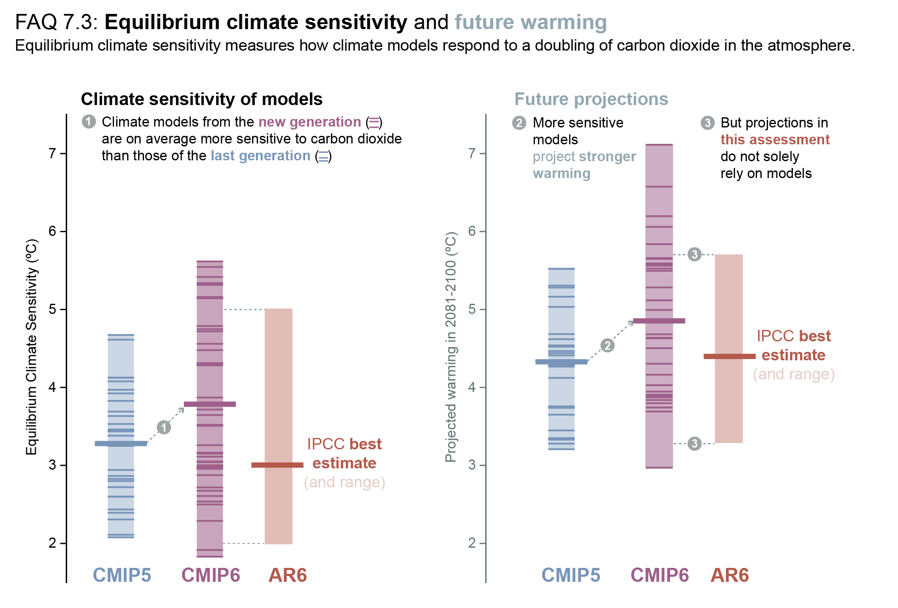
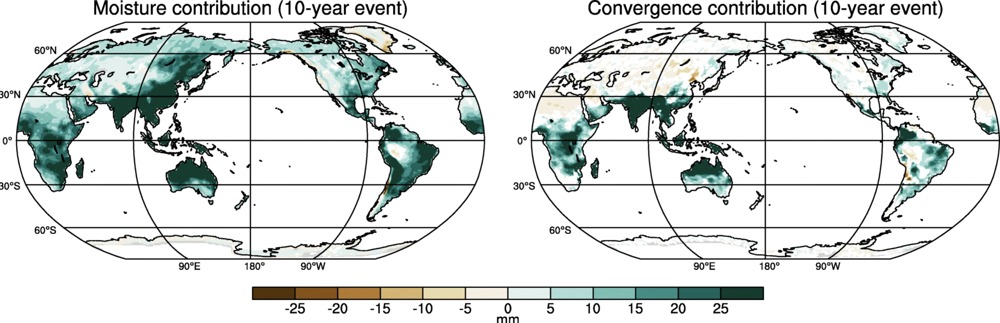

Robust climate projections with simple theories#
Climate projections have significant uncertainty due to the uncertainty of the representation of subgrid processes such as clouds, leading to a wide range range of ECS (Equilibrium Climate Sensitivity, which we recall is the warming expected in response to a doubling of \(CO_2\)), as seen in this figure from IPCC WG1 report chapter 7. With the new generation of models the sensitivity and uncertainty has even grown.

Nevertheless, there are certain robust responses that we can predict using simple models and basic understanding of physics that can be tested and evaluated in complex climate models - this enables us to move away from a simple diagnostic assessment of climate output and move towards grounded theories.
Some examples of robust responses are
Increase of mean precipitation by 2% \(K^{-1}\)
Mean increase of precipitation extremes by 7% \(K^{-1}\)
Thus Reduced frequency of precipitation
Land warming faster (~double the rate) than oceans
High altitudes warming faster than low altitudes
High latitudes warming faster then low latitudes
Increased vapour pressure deficit and reduced relative humidity (RH) over land
Water vapour feedback approximately that obtained by an assumption of constant RH.
In this notebook we will discuss the robust reponses of precipitation to warming, with the temperature responses in a follow up part 2 (under construction)
1. Mean precipitation increases#
One might think that precipitation increases in future would be related to the Clausius-Clapeyron equation that determines how the saturation pressure increases with temperature, but as we will see, this is not the case. Global mean precipitation response is actually constrained by atmospheric energetics.
Global energy budget#
Let’s have a look at the global energy budget for the atmosphere. This is determined by the following equation.
Where
\(L_v\) is the latent heat of vaporisation (2.5 J kg\(^{-1}\))
\(P\) is the precipitation rate
\(S\) is the surface sensible heat flux
\(\dot{Q}_{rad}\) is the net radiative heating of the atmosphere
sign convention#
Here we adopt the sign convection that +ve indicates heating of atmosphere, i.e. \(L_v P\) and \(S\) are positive, whereas \dot{Q}_{rad} is negative as the vertically mass weighted RCE equilibrium state is warmer than that for pure radiative equilibrium as we saw in the first terms course.)
So essentially the RHS describes the net cooling of the atmosphere, which is balances by the net latent heating from phase change i.e. the water source is evaporation from the surface which then falls to earth as precipitation. Note that this assumes that in a long term equilibrium \(E \approx P\) where \(E\) is the evaporation rate written in terms of mm time\(^{-1}\), and there is no change in net storage (or that change is very small).
Think about this equation for a moment, there is another assumption that is not accurate.
Think about the Latent heat of evaporation $L$, that is the latent heating that results from changing one kg of vapor to the liquid phase. First of all, this is a weak function of $T$ but this is just a couple of percent and can be safely ignored.But in addition this means that if precipitation falls in the ice phase, one should the latent heat of Fusion instead! \(L_f \approx 2.8e6 \) J kg\(^{-1}\)
Thus the percent error is \((L_f-L_v) f_{ice} / L_v\) where f_{ice} is the global percentage of precipitation that falls to the surface in the ice phase, roughly 5 to 6%.
Let’s quickly look at a few lines of code to calculate this (see next box).
# constants
L_f=2.8e6
L_v=2.5e6
f_ice=0.06
percent_error=100.*f_ice*(L_f-L_v)/L_v
print ("percentage_error of neglecting ice phase", percent_error)
percentage_error of neglecting ice phase 0.72
As we see, as the fraction \(f_{ice}\) is so small and also \(L_f \sim L_v\) then the overall error is less than one percent and we can also ignore this, or simply incorporate this by using a weighted average value for \(L\).
L_e= f_ice*L_f + (1.0-f_ice)*L_v
formatted_L = f"{L_e:.3e}".replace("e+0", " e ").replace("e+", " e ")
print ("equivalent weighted L ",formatted_L, "J/kg")
equivalent weighted L 2.518 e 6 J/kg
How do these terms change?#
We can rearrange the above energy balance equation in terms of precipitation
Now \(S\) is not expected to change much with warming for two reasons, first of all, over oceans \(S \ll L_e P\), that is, latent heating is much larger then sensible heating by an order of magnitude and oceans cover 70% of the planet.
Moreover even over land where the Bowen ratio is such that \(S\) can much much larger, even here, the change is \(S\) is restricted because the boundary layer temperature (and therefore to a good extent also the free troposphere) are tightly coupled. Let’s look at the surface flux bulk formula for \(S\):
where \(\rho_a\) is the atmospheric density and \(C_d\) is the drag coefficient related to the surface “roughness” and \(c_p\) the specific heat capacity and \(V\) the velocity. \(T_{2m}\) is the temperature of the atmosphere measured at 2 meters.
The key thing is the difference \((T_{2m}-T_s)\). As the surface warms then the boundary layer also warms, and the surface flux remains close to the pre-warmed state. Only significant changes to surface roughness or winds \(V\) could impact \(S\), and changes to \(V\) are very small.
This means that in future, changes in precipitation are mostly determined by changes to the mean net radiative cooling of the atmosphere \(\dot{Q}_{rad}\)
How does $\dot{Q}_{rad}$ change as the surface warms? does it increase or decrease in magnitude? (click to open)
Think about how warming leads to a troposphere-deep response which follows a moist adiabat. The result of this warming is that the equilibrium profile is further away from the radiative equilibrium profile, and thus the net cooling increases in magnitude. But what is the magnitude of that change?
Let’s use climlab to make and estimate!!!
Calculation with Climlab#
We will now use climlab to calculate how net radiation changes for each degree of warming. I won’t go through the first few cells as they are lifted straight from the last lecture on water vapor feedback.
%matplotlib inline
import numpy as np
import matplotlib.pyplot as plt
import xarray as xr
from metpy.plots import SkewT
import climlab
import requests
import os
# Note: Ensure the URL points to the actual .nc file download
url = "http://clima-dods.ictp.it/Users/tompkins/diploma/data/"
files=["tmean3.nc","qvmean3.nc"]
target="../data/"
for file in files:
# 2. Download the file if it doesn't exist on your disk yet
if not os.path.exists(target+file):
print(f"Downloading {file}...")
r = requests.get(url+file, stream=True)
r.raise_for_status()
with open(target+file, 'wb') as f:
for chunk in r.iter_content(chunk_size=8192):
f.write(chunk)
print("Download complete.")
else:
print("Files present")
# new coder to read files
time_coder = xr.coders.CFDatetimeCoder(use_cftime=True)
if True:
ds = xr.open_dataset(target+"tmean3.nc",decode_times=time_coder)
Tglobal=ds.air
ds = xr.open_dataset(target+"qvmean3.nc",decode_times=time_coder)
Qglobal=ds.q
Files present
Files present
# Make a model on same vertical domain as the GCM
mystate = climlab.column_state(lev=Qglobal.level, water_depth=2.5)
# Build the radiation model -- just like we already did
rad = climlab.radiation.RRTMG(name='Radiation',
state=mystate,
specific_humidity=Qglobal.values,
timestep = climlab.constants.seconds_per_day,
albedo = 0.25, # surface albedo, tuned to give reasonable ASR for reference cloud-free model
)
# Now create the convection model
conv = climlab.convection.ConvectiveAdjustment(name='Convection',
state=mystate,
adj_lapse_rate=6.5,
timestep=rad.timestep,
)
# Here is where we build the model by coupling together the two components
rcm = climlab.couple([rad, conv], name='Radiative-Convective Model')
Now we need to calculate the net atmosphere cooling rate. In order to do this, we will calculate the net flux divergence over the column:
where \(F_{net,...}\) is flux sum of the solar and longwave components at the surface (SFC) and top of atmosphere (TOA) with positive fluxes implying downward direction. The units are \(Wm^{-2}\). Which variables are these, let’s take a look at the diagnostics.
print(rad.diagnostics.keys())
dict_keys(['OLR', 'OLRclr', 'OLRcld', 'TdotLW', 'TdotLW_clr', 'LW_sfc', 'LW_sfc_clr', 'LW_flux_up', 'LW_flux_down', 'LW_flux_net', 'LW_flux_up_clr', 'LW_flux_down_clr', 'LW_flux_net_clr', 'ASR', 'ASRclr', 'ASRcld', 'TdotSW', 'TdotSW_clr', 'SW_sfc', 'SW_sfc_clr', 'SW_flux_up', 'SW_flux_down', 'SW_flux_net', 'SW_flux_up_clr', 'SW_flux_down_clr', 'SW_flux_net_clr'])
So for the net TOA we need rad_proc.ASR, rad_proc.OLR and for the surface we take the last level of the flux arrays “index -1” SW_flux_down[-1], SW_flux_up[-1] LW_flux_down[-1] LW_flux_up[-1]
def calculate_column_q(rcm_model):
"""
Calculates the net atmospheric column radiative heating/cooling rate.
Returns: Q in W/m2 (negative values mean net cooling)
"""
rad_proc = rcm_model.subprocess['Radiation']
# Net downward radiation at TOA
net_TOA = rad_proc.ASR - rad_proc.OLR
# Net downward radiation at Surface (Down minus Up for both LW and SW)
# index 0 corresponds to the surface interface in the flux arrays
SW_sfc_net = rad_proc.SW_flux_down[-1] - rad_proc.SW_flux_up[-1]
LW_sfc_net = rad_proc.LW_flux_down[-1] - rad_proc.LW_flux_up[-1]
net_sfc = SW_sfc_net + LW_sfc_net
# Atmospheric Column Net Radiative Convergence (W/m2)
Q_column = net_TOA - net_sfc
return Q_column[0]
rcm.integrate_years(4)
Q_flux_base = calculate_column_q(rcm)
# actual specific humidity
q = rcm.subprocess['Radiation'].specific_humidity
# saturation specific humidity (a function of temperature and pressure)
qsat = climlab.utils.thermo.qsat(rcm.Tatm, rcm.lev)
# Relative humidity
rh = q/qsat
print ("equilibrium Ts ",rcm.Ts[0])
Integrating for 1460 steps, 1460.9688 days, or 4 years.
Total elapsed time is 3.997347513512951 years.
equilibrium Ts 285.6543391508532
We can convert this flux divergence into a net cooling rate using the heat capacity of the column \(M c_p\) where M is the atmosphere mass \(M=\frac{p_s}{g}\) where \(p_s\) is the surface pressure. Thus
def get_column_heating_rate_kday(rcm_model):
"""
Converts the column energy flux (W/m2) into a column-integrated mass-weighted
heating rate in K/day using the surface pressure.
"""
# Get the net energy flux in W/m2 (J/s/m2)
Q_w_m2 = calculate_column_q(rcm_model)
# Physical Constants
g = climlab.constants.g # ~9.81 m/s2
cp = climlab.constants.cp # ~1004 J/kg/K
sec_per_day = climlab.constants.seconds_per_day # 86400
# get surface pressure in Pascals (N/m2)
ps_pa = rcm_model.lev_bounds[-1]*100
# Calculate total atmospheric column mass per unit area (kg/m2)
M_atm = ps_pa / g
# Calculate heating rate in K/day
dT_dt_per_day = sec_per_day * Q_w_m2 / (M_atm * cp)
return dT_dt_per_day
get_column_heating_rate_kday(rcm)
np.float64(-0.689418406468796)
so the net cooling rate is 0.73 K day\(^{-1}\). Now you may know that a typical cooling rate is actually around 1.2 K day\(^{-1}\),
# add one K to Ts and store it!
rcm.Ts+=1
store_T=rcm.Ts[0]
print (store_T)
for n in range(2000):
# At every timestep
# we calculate the new saturation specific humidity for the new temperature
# and change the water vapor in the radiation model
# so that relative humidity is always the same
qsat = climlab.utils.thermo.qsat(rcm.Tatm, rcm.lev)
rcm.subprocess['Radiation'].specific_humidity[:] = rh * qsat
rcm.step_forward()
rcm.Ts[:]=store_T
rcm.Ts
286.6543391508532
Field([286.65433915])
Q_flux_p1 = calculate_column_q(rcm)
Q_kday_p1 = get_column_heating_rate_kday(rcm)
print ("net cooling : ",Q_kday_p1, Q_flux_p1)
percentage_cool=100.*(Q_flux_p1-Q_flux_base)/Q_flux_base
print ("% change" ,percentage_cool)
net cooling : -0.7114054719226356 -84.35505170662393
% change 3.189219383691456
What do we see?#
The net cooling rate increases by 3%. This model is very simple with no clouds so this estimate is essentially a clear sky response which tends to amplify the cooling. Moreover, and perhaps even more important the lapse rate is fixed in this simple model. If you recall discussion in class we said that this is a negative feedback as the upper troposphere warms faster than the lower, increasing emission from a level above the bulk of the column water vapor. If you perform this test in a full global model with clouds in an AMIP type experiment (I’ll try to process some AMIP runs to show this) then the answer is closer to 2%.
So to a zero order approximation, the cooling rate increases by 2% and thus the global mean precipitation has to increase by the same amount.
Extreme Precipitation#
so that was the mean response. We now examine the potential change in precipitation extremes. We don’t go into details here, but if you want to dig a bit deeper, there is a beautiful review paper by Neelin et al, 2022 that is an excellent starting point. In that paper they start with the governing equations
Governing Conservation Equations#
The vertically integrated moisture and thermodynamic energy equations represent the fundamental balances governing atmospheric water vapor and temperature.
Where \(\hat{x}\) denotes a mass-weighted vertical integral in pressure coordinates (\(p_s\): surface pressure, \(g\): gravity).
Moisture Conservation#
Can be expressed in flux form : $\( \frac{\partial \hat{q}}{dt} + \nabla \cdot \widehat{\mathbf{v}q} = E - P \)\( which can be written in an advective form: \)\(\partial_t \hat{q} + \widehat{\mathbf{v} \cdot \nabla q} + \widehat{\omega \partial_p q} = E - P \)$
Thermodynamic Energy Balance#
FIX HAT error
where the new variables are:
\(q\): Water vapor mixing ratio
\(\mathbf{v}\): Horizontal wind vector
\(\omega\): Vertical pressure velocity
\(s = c_p T + \phi\): Dry static energy (\(\phi\): geopotential)
\(F_s\): Net column radiative + sensible heat flux
\(Q_c \approx L_v P\): Convective heating (\(L_v\): net latent heat of condensation)
Leading Order Balances for Heavy Precipitation#
Under heavily precipitating conditions (especially in the tropics), storage and evaporation are small and can be neglected. The moisture and energy budgets reduce to simple balance equations:
First We introduce the convergence \(C\): $\(C = -\nabla \cdot \mathbf{v} = \partial_p \omega\)$
and precipitation is balanced by low-level moisture convergence \(\hat{q}C\) (\(E\) is much smaller than \(P\) in heavily precipitating areas.
To diagnose how global warming changes precipitation (\(\Delta\)), the moisture budget can be decomposed into distinct physical mechanisms for both mean climate states and extreme quantiles.
We can neglect changes in evaporation \(\Delta E\) as these are small for the reasons given above (PBL tracking surface). We can also neglect the nonlinear terms, and thus
leading to the approximate equation for the \(i^{th}\) percentile $\(\Delta \hat{q}_i C_i + \hat{q}_i \Delta C_i \approx \Delta P_i \)$
Thermodynamic Term (\(\Delta \hat{q}C\))#
This represents the large-scale, predictable background response to a warming planet.
As temperatures rise, the atmosphere naturally holds more water vapor according to CC. This scales at roughly 7% per Kelvin of warming according to the Clausius-Clapeyron relation.
Even if atmospheric circulation and wind patterns (\(C\)) stay exactly the same as they are today, the water vapor increases. This drives the “wet-get-wetter, dry-get-drier” pattern. Historically wet regions receive more rainfall purely because the baseline moisture supply has increased.
Dynamic Term (\(\hat{q}\Delta C\))#
This represents how local shifts in atmospheric circulation modify that baseline response.
Climate change alters wind patterns, shifts storm tracks, and changes how intensely air converges or diverges (\(\Delta C\)).
If storm convergence intensifies (\(\Delta C > 0\)), this can lead to an increased import of moisture, this amplifies the CC response and lead to “super-CC” extreme precip increases.

Precipation frequency#
So what are the take home messages…
mean precipitation approximately balances radiative cooling, which increases by roughly 2% for every degree of warming.
Precipitation extreme instead scale with Clausius Clepeyron in the mean so that for every degree of warming, the water content increases by 7%. This thermodynamic reponse is then modulated by a dynamic response that can amplify or decrease extremes, in some locations doubling the CC response.
And so finally we come to the precipitation frequency… so if extremes increase by 7% but the mean only by 2%, the only way for this to hold together is by a decrease in precipitation frequency, so that rain is more intense when it happens but it will happen less often. i.e. dry spells will get longer.
This can have implications for any impact that is nonlinear. For example malaria vectors need ponds that last long enough for the larvae to develop and emerge, but intense rainfall can “flush” out early stage larvae. Thus longer dry spells will dry out some ponds and knock back malaria and intense rainfall will also decrease vector density through flushing of early 1st stage instar.